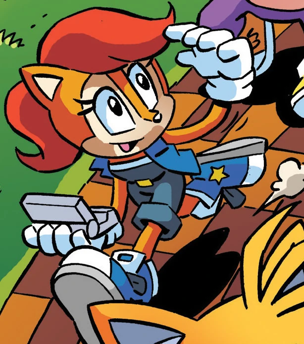
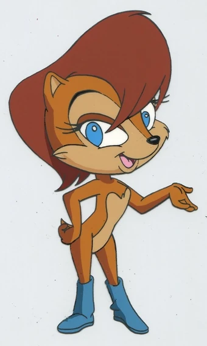
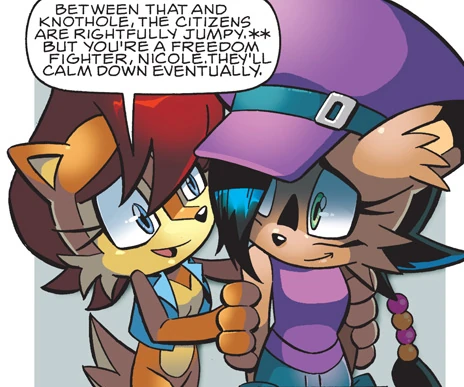
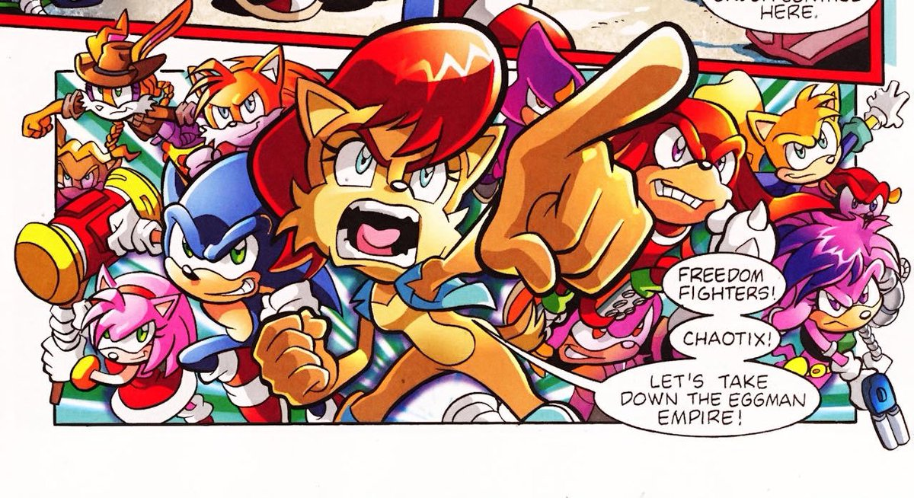
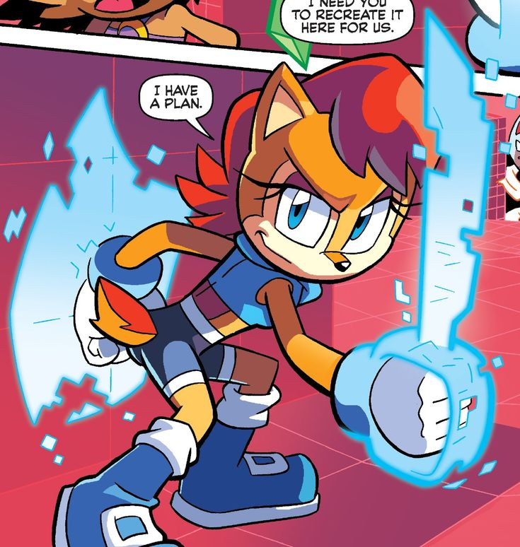

Especie
Ardilla antropomórfica

Ardilla antropomórfica
Princesa de Knothole / Líder de los Freedom Fighters
Estrategia militar, artes marciales, manejo de tecnología (NICOLE)
Sonic, Tails, Antoine, Rotor, Bunnie



Debut de Sally como líder de los Freedom Fighters en la serie animada.
Se expande su historia y relación con Sonic en el cómic mensual.
Cambios de vestuario y personalidad conforme evoluciona la serie de cómics.
Sigue siendo un personaje querido por la comunidad de fans, con distintas versiones según la era.

